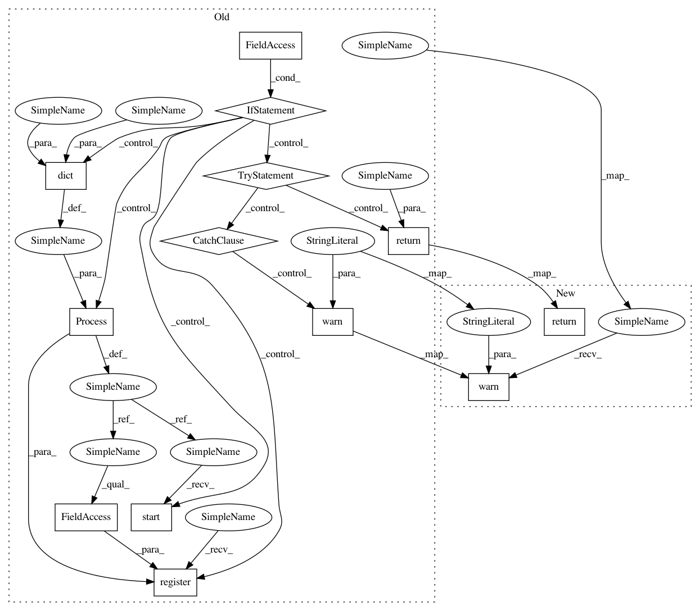

48688f4849627a9f2924570ab42b83cc917f2d87,trixi/logger/experiment/pytorchexperimentlogger.py,PytorchExperimentLogger,get_pr_curve,#,479
Before Change
// self.show_lineplot(precision, recall, name=name, opts={"fillarea": True, "webgl": True})
// self.add_to_graph(x_vals=np.arange(0, 1.1, 0.1), y_vals=np.arange(0, 1.1, 0.1), name=name, append=True)
if use_sub_process:
p = Process(target=__get_pr_curve, kwargs=dict(tensor=tensor,
labels=labels,
reduce_to_n_samples=reduce_to_n_samples,
results_fn=results_fn
))
atexit.register(p.terminate)
p.start()
else:
try:
return __get_pr_curve(tensor=tensor,
labels=labels,
reduce_to_n_samples=reduce_to_n_samples,
results_fn=results_fn
)
except Exception as e:
warnings.warn("Sth went wrong with calculating the pr curve")
@staticmethod
def get_classification_metrics(tensor, labels, name="", metric=("roc-auc", "pr-score"), use_sub_process=False,
tag_name=None, results_fn=lambda x, *y, **z: None):
After Change
results_fn: function which is called with the results/ return values. Expected f(precision, recall)
warnings.warn("This method is deprecated !!! Please use the utils.metrics method")
return get_pr_curve(tensor, labels, reduce_to_n_samples, use_sub_process, results_fn)
@staticmethod
def get_classification_metrics(tensor, labels, name="", metric=("roc-auc", "pr-score"), use_sub_process=False,
tag_name=None, results_fn=lambda x, *y, **z: None):
In pattern: SUPERPATTERN
Frequency: 3
Non-data size: 13
Instances
Project Name: MIC-DKFZ/trixi
Commit Name: 48688f4849627a9f2924570ab42b83cc917f2d87
Time: 2019-09-13
Author: d.zimmerer@dkfz-heidelberg.de
File Name: trixi/logger/experiment/pytorchexperimentlogger.py
Class Name: PytorchExperimentLogger
Method Name: get_pr_curve
Project Name: MIC-DKFZ/trixi
Commit Name: 48688f4849627a9f2924570ab42b83cc917f2d87
Time: 2019-09-13
Author: d.zimmerer@dkfz-heidelberg.de
File Name: trixi/logger/experiment/pytorchexperimentlogger.py
Class Name: PytorchExperimentLogger
Method Name: get_pr_curve
Project Name: MIC-DKFZ/trixi
Commit Name: 48688f4849627a9f2924570ab42b83cc917f2d87
Time: 2019-09-13
Author: d.zimmerer@dkfz-heidelberg.de
File Name: trixi/logger/experiment/pytorchexperimentlogger.py
Class Name: PytorchExperimentLogger
Method Name: get_roc_curve
Project Name: MIC-DKFZ/trixi
Commit Name: 48688f4849627a9f2924570ab42b83cc917f2d87
Time: 2019-09-13
Author: d.zimmerer@dkfz-heidelberg.de
File Name: trixi/logger/experiment/pytorchexperimentlogger.py
Class Name: PytorchExperimentLogger
Method Name: get_classification_metrics